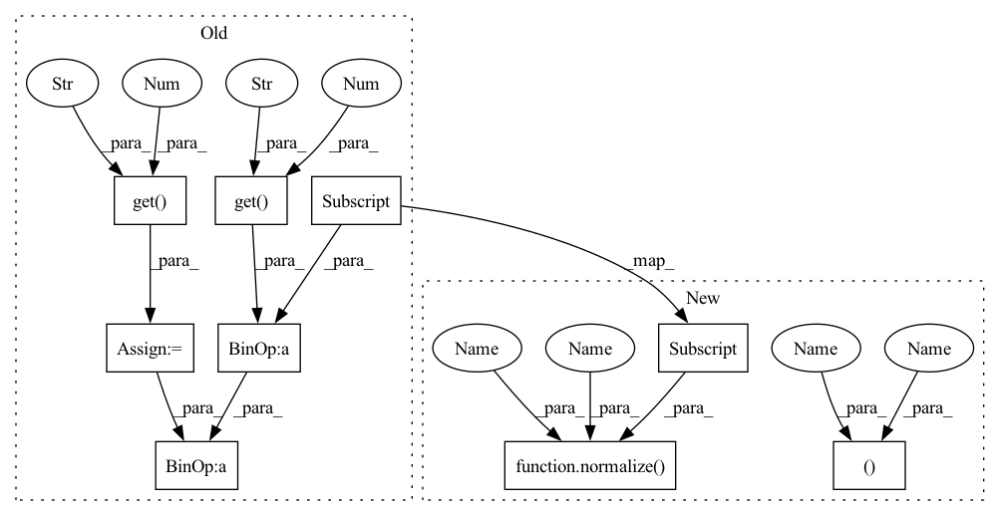

Pattern ID :11134
Before Change
em_list.append(attr_t)
dist_mean = self.data_feature.get("dist_mean" , 9.578281194509781 )
dist_std = self.data_feature.get("dist_std" , 3.9656010701306283 )
dist = (batch["dist"] - dist_mean) / dist_std
dist = (dist - dist_mean) / dist_std
em_list.append(dist)
After Change
em_list.append(attr_t)
dist_mean , dist_std = self.data_feature["dist_mean"], self.data_feature["dist_std"]
dist = normalize(batch["dist"] , dist_mean , dist_std )
dist = normalize(dist, dist_mean, dist_std)
em_list.append(dist)
return torch.cat(em_list, dim=1)In pattern: SUPERPATTERN
Frequency: 3
Non-data size: 9
Instances Fragment ID: 38200206
Project Name: libcity/bigscity-libcity
Commit Name: cab95b3cb593a94b61a1b781d97ef62ca1afc41e
Time: 2021-12-26
Author: 1152090685@qq.com
File Name: libcity/model/eta/DeepTTE.py
M Class Name: Attr
N Class Name: Attr
M Method Name: forward(2)
N Method Name: forward(2)
M Parent Class: nn.Module
N Parent Class: nn.Module
M File Name: libcity/model/eta/DeepTTE.py
N File Name: libcity/model/eta/DeepTTE.py
M Start Line: 56
M End Line: 59
N Start Line: 64
N End Line: 66
Before Change
if self.training:
// get the mean/std of each local path
time_gap_mean = self.data_feature.get("time_gap_mean" , 43.8756927994 )
time_gap_std = self.data_feature.get("time_gap_std" , 51.4811932987 )
mean, std = (self.kernel_size - 1) * time_gap_mean, (self.kernel_size - 1) * time_gap_std
current_tim = (batch["current_tim"] - time_gap_mean) / time_gap_std
// get ground truth of each local path
local_label = get_local_seq(current_tim, self.kernel_size, mean, std, self.device)After Change
if self.training:
// get the mean/std of each local path
time_gap_mean, time_gap_std = self.data_feature["time_gap_mean"], self.data_feature["time_gap_std"]
mean, std = (self.kernel_size - 1) * time_gap_mean, (self.kernel_size - 1) * time_gap_std
current_tim = normalize(batch["current_tim"] , time_gap_mean, time_gap_std)
// get ground truth of each local path
local_label = get_local_seq(current_tim, self.kernel_size, mean, std, self.device)
local_loss = self.local_estimate.eval_on_batch(local_out, local_length, local_label, mean, std) Fragment ID: 38200213
Project Name: libcity/bigscity-libcity
Commit Name: cab95b3cb593a94b61a1b781d97ef62ca1afc41e
Time: 2021-12-26
Author: 1152090685@qq.com
File Name: libcity/model/eta/DeepTTE.py
M Class Name: DeepTTE
N Class Name: DeepTTE
M Method Name: calculate_loss(2)
N Method Name: calculate_loss(2)
M Parent Class: AbstractTrafficStateModel
N Parent Class: AbstractTrafficStateModel
M File Name: libcity/model/eta/DeepTTE.py
N File Name: libcity/model/eta/DeepTTE.py
M Start Line: 365
M End Line: 376
N Start Line: 369
N End Line: 378
Before Change
em_list.append(attr_t)
dist_mean = self.data_feature.get("dist_mean" , 9.578281194509781 )
dist_std = self.data_feature.get("dist_std" , 3.9656010701306283 )
dist = (batch["dist"] - dist_mean) / dist_std
dist = (dist - dist_mean) / dist_std
em_list.append(dist)
After Change
em_list.append(attr_t)
dist_mean, dist_std = self.data_feature["dist_mean"], self.data_feature["dist_std"]
dist = normalize(batch["dist"] , dist_mean, dist_std)
dist = normalize(dist, dist_mean, dist_std)
em_list.append(dist)
return torch.cat(em_list, dim=1) Fragment ID: 38200210
Project Name: libcity/bigscity-libcity
Commit Name: cab95b3cb593a94b61a1b781d97ef62ca1afc41e
Time: 2021-12-26
Author: 1152090685@qq.com
File Name: libcity/model/eta/DeepTTE.py
M Class Name: Attr
N Class Name: Attr
M Method Name: forward(2)
N Method Name: forward(2)
M Parent Class: nn.Module
N Parent Class: nn.Module
M File Name: libcity/model/eta/DeepTTE.py
N File Name: libcity/model/eta/DeepTTE.py
M Start Line: 56
M End Line: 59
N Start Line: 64
N End Line: 66
Before Change
longi_std = self.data_feature.get("longi_std", 0.04988770679679998)
current_longi = (batch["current_longi"] - longi_mean) / longi_std
lngs = torch.unsqueeze(current_longi, dim=2)
lati_mean = self.data_feature.get("lati_mean" , 30.652312982784895 )
lati_std = self.data_feature.get("lati_std" , 0.04988770679679998 )
current_lati = (batch["current_lati"] - lati_mean) / lati_std
lats = torch.unsqueeze(current_lati, dim=2)
states = self.state_em(batch["current_state"].long())After Change
longi_mean, longi_std = self.data_feature["longi_mean"], self.data_feature["longi_std"]
current_longi = normalize(batch["current_longi"], longi_mean, longi_std)
lngs = torch.unsqueeze(current_longi, dim=2)
lati_mean, lati_std = self.data_feature["lati_mean"], self.data_feature["lati_std"]
current_lati = normalize(batch["current_lati"] , lati_mean, lati_std)
lats = torch.unsqueeze(current_lati, dim=2)
states = self.state_em(batch["current_state"].long())
Fragment ID: 38200207
Project Name: libcity/bigscity-libcity
Commit Name: cab95b3cb593a94b61a1b781d97ef62ca1afc41e
Time: 2021-12-26
Author: 1152090685@qq.com
File Name: libcity/model/eta/DeepTTE.py
M Class Name: GeoConv
N Class Name: GeoConv
M Method Name: forward(2)
N Method Name: forward(2)
M Parent Class: nn.Module
N Parent Class: nn.Module
M File Name: libcity/model/eta/DeepTTE.py
N File Name: libcity/model/eta/DeepTTE.py
M Start Line: 79
M End Line: 100
N Start Line: 86
N End Line: 104